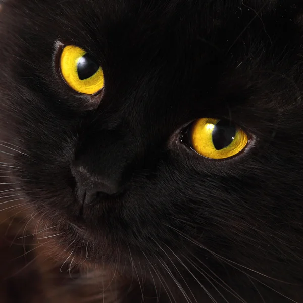

About the Travel Blog
Welcome to our Travel Blog, where we explore the world’s most mysterious, dark, and captivating destinations. Just like a black cat with glowing yellow eyes, our blog seeks out the hidden, eerie, and enchanting places that most travelers overlook. We focus on uncovering spots that not only boast an air of mystery but also offer a deep connection to history, culture, and natural beauty. This blog is dedicated to those who are drawn to the unknown—the places that evoke wonder, curiosity, and awe with their dark allure. Whether it's a haunting castle, an ancient forest shrouded in fog, or a city steeped in ghostly legends, we bring you stories and travel tips for visiting these uniquely atmospheric locations. Our goal is to inspire adventurous souls to visit these places, embrace their eerie charm, and discover a side of the world that isn’t often seen. With rich descriptions, stunning photography, and detailed travel guides, our blog serves as a roadmap to destinations that offer a little bit of magic and a lot of mystery. Join us as we venture into the shadows and explore the darker corners of the world, where every journey is an adventure and every destination holds a story waiting to be uncovered.
